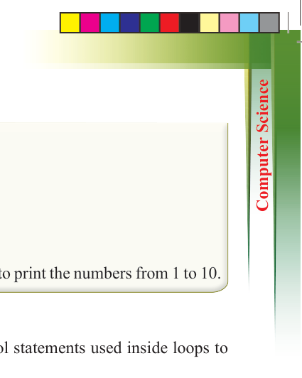
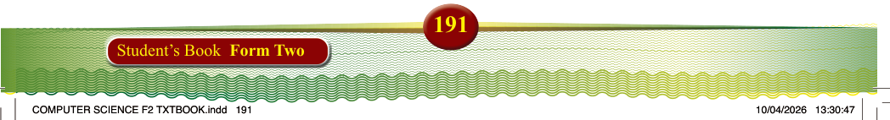
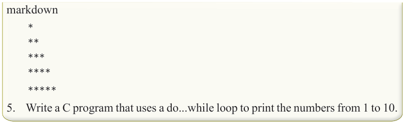
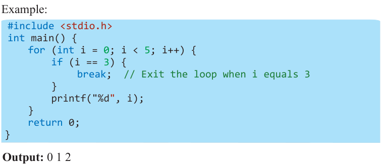
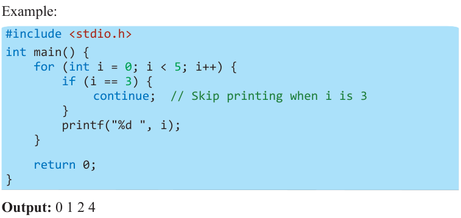

markdown
*
**
***
****
*****
5. Write a C program that uses a do...while loop to print the numbers from 1 to 10.
Using break and continue in Loops
In C programming, break and continue are control statements used inside loops to alter the flow of execution.
(i) Break: Terminates the loop entirely, exiting it regardless of the condition.
Example:

#include <stdio.h> int main() { for (int i = 0; i < 5; i++) { if (i == 3) { break; // Exit the loop when i equals 3
} printf("%d", i);
} return 0;
}
Output: 0 1 2
(ii) Continue: Skips the current iteration and moves to the next iteration of the loop.
Example:

#include <stdio.h> int main() { for (int i = 0; i < 5; i++) { if (i == 3) { continue; // Skip printing when i is 3
} printf("%d ", i);
} return 0;
}
Output: 0124